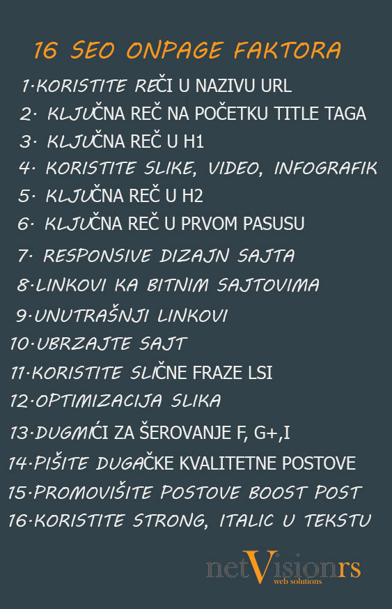

Od čega zavise SEO rezultati?
Kada dolaze SEO rezultati
SEO/optimizacija
Jedno od najčešćih pitanja sa kojim se susrećemo u SEO optimizaciji je: “Koliko će vam trebati vremena da dođem na prvu stranu gugl pretrage za svoje ključne reči?”
Odgovor na to nije uopšte jednostavan, jer vas samo pitanje usmerava u pogrešnom pravcu. Takvo pitanje se često postavlja sa stanovišta shvatanja SEO-a kakvo je nekada bilo, ali se mnogo toga promenilo.
Novi SEO - stari SEO
Nekada davno je glavna strategija bila identifikovati one ključne reči koje su najrelevantnije za vašu firmu. Ključne reči koje stvaraju najveći organski saobraćaj i koje nisu preterano konkurentne. Tada se sve svodilo na to da pronađete 5 do 10 ključnih reči koje će biti vaše “zlatne ključne reči” i koje će biti zadužene za privlačenje najvećeg dela poseta na vašem veb sajtu.
Kada neko dođe u našu firmu i kaže nam: “Moram biti broj 1 na rangiranju za tu i tu ključnu reč”, znamo da oni i dalje robuju time.
Ta strategija sa ključnim rečima je pogrešna, jer uz sve ređe i ređe izuzetke, ne postoji jedna ključna reč ili mala grupa ključnih reči koje će privući veliku posetu na vaš veb sajt, makar ne u poređenju sa onim što možete dobiti pretragom dužeg niza reči.
Suština je da ukoliko se fokusirate na malu grupu generičnih ključnih reči, najveći broj ljudi koji vas pretražuje na Internetu vas verovatno neće naći. SEO danas sve više pokreće “prirodne jezičke pretrage” iliti pretraživanje koje je sve više nalik normalnim pitanjima nego dvema ili trima ključnim rečima.
Ovo se dešava zato što ljudi sve češće koriste alatke kao što su Siri i Google Now kako bi vršili usmene pretrage, umesto da ih kucaju. Oni takođe dodaju sve više detalja u svoje kucane pretrage kako bi što brže našli ono što traže.
Ove ključne reči je mnogo lakše rangirati, jer nisu toliko konkurentne. One su relevantnije jer sadrže više detalja, a samim tim će se veći procenat poseta koje dolaze od tih reči konvertovati u stalne posetioce.
Sve ukupno, dobićete mnogo veći broj “dužih fraza” pretraga od pretraga koje biste dobili kroz vaše “zlatne ključne reči”. Time je cilj, kada je u pitanju rangiranje, ne da se rangirate za par prvih ključnih reči, već je potrebno fokusirati se na mnogo veći broj prirodnih jezičkih pretraga.
Pretraživanja svakodnevnih pitanja koja sve više rastu i sve brže se menjaju.
Rangiranje nije toliko važno kao što vi to mislite
Rangiranje jeste važno. Ali to nije metrika na koju bi vi trebalo da se fokusirate. Ako, postavljajući pitanje “Koliko je vremenski potrebno da SEO počne da daje rezultate?” mislite “Koliko će biti vremenski potrebno da budem među prvima na rangiranju”, onda ste pomešali proizvod i prihode, kao što Vil Rejnolds /Wil Reynolds/, osnivač firme Seer Interactive, voli često da kaže.
Rangiranje je proizvod koji SEO firme mogu lako da plasiraju i prodaju jer je to nešto što je emotivno zadovoljavajuće ali ne vredi mnogo ako ne generiše prodaju i pribavlja potencijalne klijente, a to je ono što želite.
Pitanje koje treba da postavite sebi
Sada kada znate kako se SEO promenio i da treba da očekujete da vaša SEO firma generiše prodaju i pribavljanje potencijalnih klijenata umesto prostog rangiranja, pitanje koje treba da postavite sebi jeste: “Koliko će vremenski biti potrebno da SEO počne da generiše prodaju?”
Koliko je vremenski potrebno da SEO počne da daje rezultate
Sada smo spremni da damo odgovor na pravo pitanje. A, taj odgovor je pa, zavisi. Iako je frustrirajuće, to je istina. Od čega on zavisi? Zavisi od toga koliko vaš veb sajt postoji, koliko je SEO rađen u prošlosti, u kom je stanju veb sajt, koliko je popunjen sadržajem, kakav je link profil i od mnogo drugih SEO faktora pogledajte infografik ispod teksta.
Nijedan vebsajt nema istu startnu poziciju, čak i da su u pitanju dva veb sajta iz iste industrije koji se bore za iste klijente. Međutim, ispod možete videti mogući scenario kako vaš SEO posao može izgledati tokom prvih nekoliko meseci i rezultati koje možete očekivati.
Prvi mesec – Istraživanje i otkrivanje, revizija veb sajta, strategija ključnih reči i planiranje. Počinje se sa SEO onpage optimizacijom, modifikacijom veb sajta na osnovu rezultata revizije. Formiranjem bloga i pisanjem tekstova na blogu.
Drugi mesec – Rad na stvaranju sadržaja na blogu, pisanje tekstova za relevantne portal, link building.
Treći mesec – Ovo je mesec u kome ćete možda početi da vidite neka poboljšanja u rangiranju do kraja ovog meseca. Ako se to rangiranje pretvori u prodaju onda je to još bolje, ali to nije još nužno za očekivati.
Četvrti mesec – Nastavak sa stvaranjem sadržaja, link building,razvoj zdravog link profila. Do ovog meseca možete očekivati da vidite veće poboljšanje u rangiranju, posetama i pribavljanju potencijalnih klijenata. To neće biti ni približno poboljšanjima nakon prvih godinu dana vašeg SEO posla, ali će biti dovoljno da znate da SEO daje rezultate.
Peti mesec – Do ovog meseca ili možda ranije bi trebalo da ste počeli sa uključivanjem upravljanja društvenim mrežama u vaš plan kako biste raširili vaš sadržaj i povećali direktnu posetu ka vašem veb sajtu. Ovo za rezultat može imati izgrađivanje zdravog i prirodnog link profila, i naravno privući potencijalne klijente samo po sebi.
Nastavljamo sa stvaranjem sadržaja na vašem blogu. Treba da se stvara sve veća i veća poseta na osnovu SEO rada u ovom trenutku, a broj vaših potencijalnih klijenata bi trebalo da se povećava kao rezultat toga.
Šesti mesec – Ako je poseta na vašem sajtu do ovog trenutka dostigla brojku od 5000 na mesečnom nivou, specifične aktivnosti mogu dosta varirati u zavisnosti od vrste vaše kompanije i toga kakav sajt posedujete.
Sada već imate stabilne posete i iz meseca u mesec one rastu.
Najbitnije je da se ne odustane u prva tri meseca. Posle kad telefoni počnu da zvone onda je sve lako.
Koliko SEO košta?
Mnoge kompanije potcenjuju koliko je vremena i novca potrebno kako bi SEO bio uspešan. Bilo kakvi uspesi retko dolaze u prva tri meseca, čak i sa izdašnim budžetom. Video sam kompanije koje počnu na pravi način, ali odustanu nakon 2 ili 3 meseca uz komentar “Jednostavno, nismo dobijali rezultate kojima bismo mogli opravdati ulaganja.” Ovo mi govori da su krenuli sa nerealnim očekivanjima.
Ako nemate sredstava za 6 do 12 meseci SEO rada, onda bolje da taj novac uložite negde drugde. Plaćanje samo par meseci za SEO se ne razlikuje mnogo od bacanja para. SEO predstavlja marketinšku strategiju koja se primenjuje na duge staze, i ne treba ga smatrati načinom da na brzinu generišete prodaju ili da pomislite nek on mene izgura na prvu stranu a ja ću tad prestati da plaćam. Kao što smo rekli to je velika zabluda, SEO se radi kontinuirano i to je sastavni deo vaših mesečnih troškova, kao da ste zaposlili nekog ko vam samo to radi.
Međutim, ako vaša finansijska sredstva uložite na pravi način, i želite da istrajete u svom planu, onda je SEO optimizacija jedna od strategija sa najvećim povraćajem ulaganja - ROI.
Google adwords je dosta skuplji u odnosu na organsku optimizaciju. Cena po kliku raste a kad ne plaćate nema vas nigde na google. Zato će vam ulaganje u SEO vremenom doneti bolju prodaju za manje uloženog novca.
Ukoliko vam je ovaj tekst bio koristan, sigurno će biti i vašim prijateljima pa vas molimo da ga podelite na vašoj društvenoj mreži. Hvala!

SEO smernice za 2019 godinu
Pročitajte na šta treba da obratite pažnju u 2019 godini....
Detaljnije...

Linkbuilding Tutorijal za 2019
Zašto su backlinkovi i dalje najvažniji za optimizaciju sajta...
Detaljnije...

13 Saveta kako privući posetioce na sajt
Korisni saveti kako da unapredite posetu na sajtu....
Detaljnije...